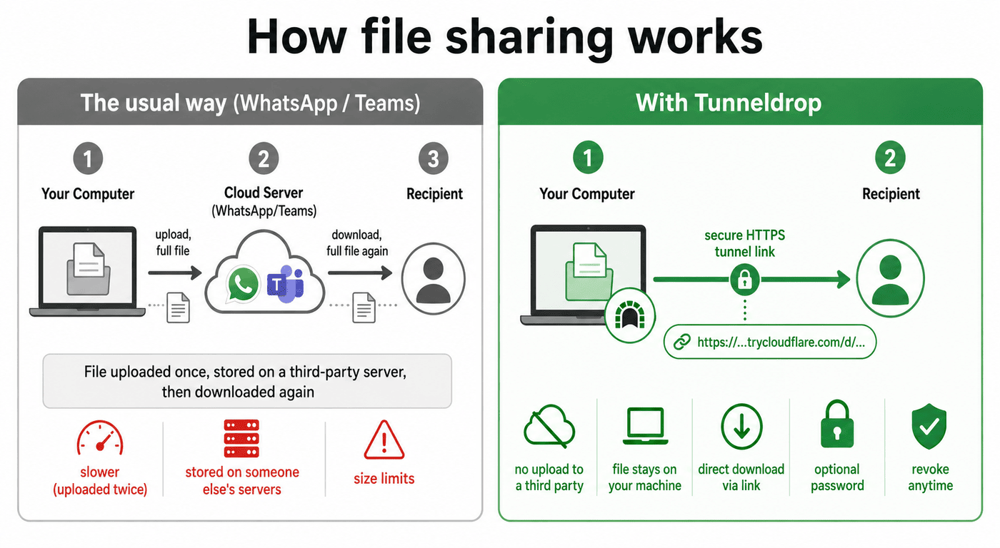

Drop a file, get an HTTPS link, send it to anyone. The file never leaves your machine — no uploads to a third party. Optional password, revoke anytime.
Download TunneldropWith WhatsApp, Teams or any cloud drive your file is uploaded to a third-party server, stored there, then downloaded again. Tunneldrop skips the middleman: the file stays on your machine and the recipient downloads it directly over a secure HTTPS tunnel.

Drag a file onto the window, or pick one — no account, no setup.
Tunneldrop opens a Cloudflare quick tunnel and hands you a https://…/d/… link.
Send the link anywhere. Add a password for anything sensitive; image links even show a preview.
Revoke a link any time. Quit the app and every tunnel tears down instantly.
Click the menu-bar / tray icon to bring the window straight back to the front.
Right-click the icon to reach Quit, which exits and tears down all tunnels.
Closing the window just hides Tunneldrop to the tray so your shares keep serving.